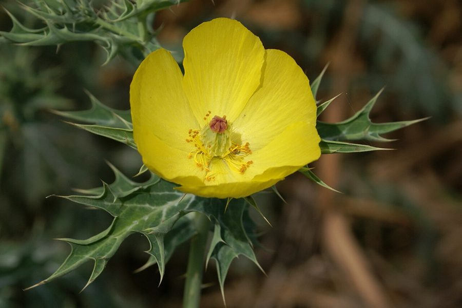

सत्यानाशीMexican Prickly Poppy
Argemone mexicana · Papaveraceae · FLR-0019

- Scientific name
- Argemone mexicana L.
- Family
- Papaveraceae
- Hindi
- सत्यानाशी / भड़भाँड़
- Status here
- invasive
- IUCN
- not evaluated
When to look कब देखें
Expected mainly in January, February, March, April, May, June, October, November, December.
सत्यानाशी / Mexican Prickly Poppy
Argemone mexicana L. — Papaveraceae
सत्यानाशी — सत्यानाशी — "सब कुछ बर्बाद करने वाला" — यह नाम बिना वजह नहीं दिया गया। मैक्सिको से आए इस पौधे ने यूपी में खाद्य सुरक्षा के सबसे बड़े संकटों में से कुछ पैदा किए — इसके बीजों ने सरसों के तेल को दूषित किया, जिससे हज़ारों लोग बीमार पड़े। फिर भी इसका फूल किसी भी सड़क पर सबसे सुंदर दृश्य है।
हिंदी परिचय Hindi Overview
सत्यानाशी (Argemone mexicana) मूल रूप से मैक्सिको और मध्य अमेरिका का पौधा है। 16वीं-17वीं सदी में यह भारत पहुँचा — शायद पुर्तगाली या डच व्यापारियों के साथ — और अब पूरे भारत में फैल चुका है। पूर्वी उत्तर प्रदेश की हर सड़क पर सर्दियों से वसंत तक दिखता है।
इसकी नीली-हरी, काँटेदार, चाँदी जैसी पत्तियाँ अद्वितीय हैं — जैसे किसी ने धातु से पत्तियाँ बनाई हों। जब इसे तोड़ें तो पीला-सफेद दूधिया रस निकलता है — यह latex ज़हरीला होता है।
सबसे महत्वपूर्ण तथ्य — खाद्य सुरक्षा: सत्यानाशी के बीज और सरसों के बीज लगभग एक ही आकार के होते हैं। जब सरसों की खेती में सत्यानाशी उगता है और फसल एक साथ काटी जाती है, बीज मिल जाते हैं। तेल निकालने पर सत्यानाशी का ज़हर (sanguinarine) सरसों के तेल में मिल जाता है।
1998 दिल्ली epidemic dropsy: 3,000+ लोग अस्पताल में, 65+ मृत — सत्यानाशी-दूषित सरसों तेल से। UP, दिल्ली, राजस्थान और पश्चिम बंगाल में इसी तरह के कई प्रकोप हुए हैं।
Quick Identification शीघ्र पहचान
| Feature | Description |
|---|---|
| Height & Habit | Erect annual or biennial herb, 30–100 cm tall; armed with sharp yellow spines throughout |
| Leaves | Silvery blue-green, deeply lobed, marbled with white vein patterns; spiny leaf margins |
| Latex | Bright yellow-orange milky sap exuding immediately when stem or leaf is broken |
| Flowers | Showy, bright sulphur-yellow, 4–6 petals, 3–5 cm across with many orange stamens |
| Fruit | Spiny, oval capsule (2.5–4.5 cm long) opening by 5–6 apical pores at maturity |
| Seeds | Numerous (200–400), globose, dark grey-black, 1.5–2 mm diameter, resembling mustard seeds |
Field tip: Look for a thistle-like, silvery blue-green spiny weed with bright yellow poppy flowers and yellow sap. The marbled leaves and yellow sap together are completely diagnostic. Argemone ochroleuca is similar but has pale yellow or white flowers.
Morphology आकृति विज्ञान
| Feature | Measurement |
|---|---|
| Plant height | 30–100 cm |
| Leaf length | 5–15 cm |
| Leaf width | 3–8 cm |
| Flower diameter | 3–5 cm |
| Fruit / seed dimensions | 2.5–4.5 cm (capsule length) |
Habit: Annual to biennial; erect, 30–100 cm; branching from base. Entire plant armed with stiff, sharp, yellowish spines on stems, leaves, and capsules.
Leaves: Alternate, sessile, semi-clasping (amplexicaul) at the base; 5–15 cm; deeply pinnatifid (lobed almost to midrib); lobes tipped with strong spines; upper surface greyish-green with prominent white veining — creating a distinctive marbled pattern. Texture smooth, glaucous (waxy-blue).
Latex: All plant parts contain a yellow-orange latex (sap) rich in benzylisoquinoline alkaloids. The latex is visible immediately when any part is broken or cut.
Flowers: Solitary at branch tips; 3 sepals (green, caducous — falling early); 6 petals (crumpled in bud, spreading flat when open), bright yellow, 2–3 cm each; numerous stamens (50–80); ovary superior.
Capsule: 2.5–4.5 × 1–1.5 cm; oblong-ellipsoid; valves opening at the apex into 5–6 pores to release seeds; densely covered in stout yellowish spines.
Seeds: 1.5–2 mm; globose; dark grey-black; reticulate (net-patterned) surface; oily; 200–400 per capsule. The size and color overlap with small mustard seeds — this is the root of the food safety problem.
हिंदी: amplexicaul = पत्ती तने को घेरती है।
latex: सारे भागों में पीला।
बीज: 200–400 प्रति फल, 1.5–2 मिमी, काले।
बीज की सतह: जाल जैसी — magnifier से देखें।
The Epidemic Dropsy Connection महामारी और खाद्य सुरक्षा
What is epidemic dropsy? A clinical syndrome caused by sanguinarine (and dihydrosanguinarine) alkaloids from Argemone seeds contaminating edible oils — most commonly mustard oil in India. Symptoms:
- Oedema (swelling) of limbs — especially lower legs
- Skin reddening (erythema)
- Diarrhoea, vomiting, abdominal pain
- Heart failure in severe cases
- In the 1998 Delhi outbreak: ascites (fluid in abdomen), pulmonary oedema
How contamination occurs:
- Argemone mexicana grows as a weed in mustard (Brassica juncea) fields throughout eastern UP
- At harvest, both plants are cut together; seeds mix in the harvested material
- At the oil mill (kolhu), Argemone seeds are not separated — they go through with the mustard
- Sanguinarine dissolves into the mustard oil
- The contaminated oil appears normal — no taste, no color change detectable without lab testing
- Consumers using the oil develop epidemic dropsy over weeks
Historical outbreaks in India:
- 1877: First documented outbreak — Calcutta
- 1942: Major outbreak — Bengal (war years)
- 1998: Delhi — 3,000+ hospitalized; 65 deaths; linked to adulterated oil from UP and Rajasthan sources
- 2009–2015: Multiple smaller outbreaks across UP, Bihar, Rajasthan
The UP connection: Eastern UP is a major mustard-producing region. Argemone contamination of mustard is documented in field surveys — up to 5% seed contamination by weight reported in some studies from Basti and adjacent districts.
Prevention: Clean seed before milling; use AGMARK certified oil (tested for argemone contamination); pour mustard oil on water — pure mustard oil spreads in concentric circles, argemone-contaminated oil forms a central deposit (a traditional field test).
हिंदी: Epidemic dropsy = argemone ज़हर (sanguinarine) + सरसों तेल।
1998 दिल्ली: 3,000+ अस्पताल, 65 मौत।
UP में सरसों की फसल में मिलता है।
पहचान का तरीका: पानी पर तेल — शुद्ध तेल गोल फैलता है।
Ecology पारिस्थितिकी
Pollination: Bees visit the bright yellow flowers — especially carpenter bees (Xylocopa spp.) and honeybees. The flowers produce abundant pollen but little nectar; the yellow color reflects strongly in UV (bees see UV) — attracting bees across long distances. A purely pollen-providing flower.
Herbivory avoidance: Sanguinarine and other alkaloids deter virtually all herbivores. Cattle and goats will not eat satyanashi. This gives it a massive competitive advantage in grazed roadsides — while other plants are eaten, satyanashi is left untouched and expands.
Pioneer invasive: Germinates in cool weather (October–November), grows through winter, flowers in spring, sets seed, and dies before peak monsoon. This winter-spring phenology avoids competition with the summer-monsoon annual flush — allowing it to dominate the winter roadside.
हिंदी: मधुमक्खियाँ पराग के लिए आती हैं — शहद नहीं।
कोई जानवर नहीं खाता — सब जगह फैल जाता है।
सर्दी में उगता है — गर्मी के खरपतवारों से पहले।
Life Cycle / Phenology जीवन चक्र
- Germination: October–February; requires cool soil temperatures (15–25°C); does NOT germinate in peak monsoon heat
- Vegetative: November–March; rosette then erect growth; rapid in cool dry season
- Flowering: February–May; peak March–April; flowers open fully in morning sun, close at midday heat
- Fruiting: April–June; each plant produces 5–30 capsules; each capsule 200–400 seeds
- Death: Dries out and dies May–July as temperatures rise and monsoon arrives
- Seed bank: Seeds persist 4–8 years in soil
हिंदी: अक्टूबर–फरवरी: ठंड में अंकुरण।
फरवरी–मई: फूल।
मई–जुलाई: मर जाता है — गर्मी में।
बीज: मिट्टी में 4–8 साल तक।
Agricultural / Human Relevance कृषि और मानव संबंध
Food safety priority: Of all eastern UP roadside weeds, Argemone mexicana is the most medically significant. The risk is not from touching it or eating it directly — it is from its seeds entering the oil supply. Farmers and millers in mustard-growing areas should be trained to recognize and remove the plant from crops.
Traditional test for contaminated oil: Pour a few drops of suspected mustard oil onto water. Pure mustard oil spreads in concentric, spreading rings (due to its fatty acid profile). Oil contaminated with argemone alkaloids shows a central residue or does not spread uniformly. This is a documented traditional quality check.
Traditional uses: Despite its toxicity, controlled medicinal use exists in folk medicine — the latex is applied topically for warts, skin diseases, and dental pain. These uses are external only. The plant is used in Ayurvedic texts (known as Swarnakshiri — "golden milky one") for specific skin preparations, always with careful processing.
Weed management: Pulling before flowering (before March) prevents seed set. The spines make gloved hands necessary. Chemical control (2,4-D) is effective but also kills non-target plants; manual removal before flowering is the ecologically sound approach.
हिंदी: सबसे ज़रूरी: सरसों में दिखे तो पहले निकालें — मार्च से पहले।
तेल परीक्षण: पानी पर — शुद्ध तेल फैलता है।
Ayurveda में: स्वर्णक्षीरी — बाहरी उपयोग।
निकालते समय दस्ताने पहनें।
Expected Locally स्थानीय रूप से अपेक्षित
Not a field record. Written from published accounts for eastern Uttar Pradesh. No confirmed local sighting yet — if you have seen it, that is what the atlas needs.
अभी तक स्थानीय पुष्टि नहीं। यह विवरण प्रकाशित स्रोतों से है, किसी अवलोकन से नहीं।
| Date | Location | Notes |
|---|---|---|
Distribution वितरण
Global range: Native to tropical America (Mexico and the Caribbean); widely naturalized and highly invasive in tropical, subtropical, and warm-temperate regions of Asia, Africa, and Australia.
In India: Found throughout the country, growing as a common ruderal weed in the plains and dry riverbeds up to lower mountain ranges.
In Uttar Pradesh: Ubiquitous along roadsides, railway tracks, riverbeds, and fallow agricultural lands in all districts.
In Basti district / eastern UP: Abundant as a winter-spring weed, invading wheat and mustard fields, path margins, and sandy floodplains.
Range notes: No significant range changes documented; remains stable and widely distributed as an invasive weed.
Research Questions शोध प्रश्न
Anyone can investigate these | कोई भी इन प्रश्नों की जाँच कर सकता है
- What percentage of mustard fields in your area have argemone growing in them? / आपके क्षेत्र में कितने प्रतिशत सरसों के खेत में सत्यानाशी है? — Survey 20 mustard fields in February–March; record presence/absence of satyanashi.
- When does satyanashi first flower in your area each year? / आपके क्षेत्र में सत्यानाशी पहले कब फूलता है? — Record the date of first open flower annually. Compare with temperature records.
- Does roadside satyanashi density increase or decrease along roads built in different years? / नई और पुरानी सड़कों पर सत्यानाशी में अंतर? — Count plants per 10m on recently constructed vs. old established roadsides. Is it a true pioneer?
- Do bees visit the flowers, and which species? / सत्यानाशी के फूल पर कौन सी मधुमक्खी आती है? — Observe 5 plants for 10 minutes each in morning (8–11 AM). Count bee visits and photograph if possible.
- Is the traditional water-drop oil test actually reliable? / पानी पर तेल डालने का परीक्षण काम करता है? — Obtain a sample of uncontaminated mustard oil and deliberately mix with a small amount of argemone seed oil (or do a literature search for what proportion causes visible difference).
Similar Species मिलती-जुलती प्रजातियाँ
| Species | How to tell apart | हिंदी |
|---|---|---|
| Argemone ochroleuca | Very similar; flowers white to pale yellow (not bright yellow); from the Americas; less common in UP | हल्के पीले या सफेद फूल |
| Thistle (Cirsium / Carduus spp.) | Also prickly; purple-pink flowers (not yellow); no latex; very different flower | बैंगनी फूल — दूध नहीं |
| Datura metel | Also toxic; large white funnel flower; no spines on leaves; different growth form | धतूरा — बड़ा सफेद फूल |
Field rule: Prickly roadside herb + distinctive silvery blue-green marbled leaves + yellow latex when broken + bright sulphur-yellow poppy flowers (winter-spring) = Argemone mexicana. The marbled leaf and yellow sap together are unique — no other common UP roadside plant has both.
Taxonomy & Classification वर्गीकरण
Original description. Argemone mexicana was described by Carl Linnaeus in 1753 in Species Plantarum 1: 508. Type locality: Mexico. The genus name Argemone was used by Dioscorides for a poppy-like plant, and mexicana indicates its Mexican origin.
Subspecies. Monotypic — no subspecies are currently recognised.
Family and order placement. Belongs to the order Ranunculales, family Papaveraceae, subfamily Papaveroideae, tribe Papavereae. Papaveraceae is a family of about 44 genera and 800 species of herbaceous plants, widely distributed in temperate and subtropical climates, notable for producing latex and various alkaloids.
Phylogenetic notes. Argemone is a monophyletic genus of about 30 species, native to the Americas. Molecular studies indicate that Argemone mexicana is closely nested within the genus, forming a clade with other prickly poppy species native to North America and the Caribbean.
IUCN status rationale. This species has not been formally assessed by the IUCN Red List. As an aggressive, toxic invasive weed, its global and regional populations are stable and expanding across disturbed agricultural and ruderal habitats in the Gangetic plain.
Photo Gallery फोटो गैलरी
Note: Add field photos tomedia/species/satyanashi/
फोटो निर्देश: नीली-चाँदी संगमरमर पत्तियाँ (close-up — सबसे ज़रूरी), पीला फूल, पीला दूधिया रस, काँटेदार फल, और पूरा पौधा।
Photos needed आवश्यक फोटो
- [ ] Marbled leaf close-up — silvery-blue pattern (संगमरमर पत्ती — close-up)
- [ ] Yellow flower open (पीला फूल — खुला)
- [ ] Yellow latex — broken stem (पीला दूधिया रस)
- [ ] Spiny capsule (काँटेदार फल)
- [ ] Full plant in winter sun (पूरा पौधा — सर्दियों में)
Atlas Connections संबंधित प्रजातियाँ
- Congress Grass — shares roadside invasive niche; both from the Americas; both spreading in eastern UP (FLR-0001)
- Lantana — shares invasive-from-Americas status; both chemically defended weeds (FLR-0007)
- Paddy — satyanashi grows in mustard (associated with wheat-mustard rotation cycle after paddy); contamination risk is highest in mustard-heavy rotations (FLR-0014)
- Dhatura — both are toxic roadside plants with traditional medicinal uses and significant poisoning risk; similar ecological niche (FLR-0015)
References संदर्भ
- Linnaeus, C. (1753). Species Plantarum, 1: 508. Laurentii Salvii, Holmiae.
- Sharma, B.D., Mathur, R. & Mani, S. (2000). Epidemic dropsy — the argemone oil connection. National Medical Journal of India, 13(1): 12–13.
- Verma, S.K., Dev, G., Tyagi, A.K., Goomber, S. & Jain, G.C. (2001). Argemone mexicana poisoning: autopsy findings of two cases. Forensic Science International, 115(1–2): 135–141.
- Botanical Survey of India — Flora of Uttar Pradesh.
- Hooker, J.D. (1872). Flora of British India, Vol. 1. L. Reeve & Co., London.
- GBIF Occurrence Data — Argemone mexicana, India (2026).
Source file: species/flora/weeds/satyanashi.md